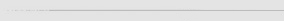

Los porcentajes en un proyecto de traducción no me parecen muy útiles, sin embargo es una buena solución para ver si el proyecto avanza o no. Por lo que aquí teneis unos cuantos porcentajes para que veais que esto marcha.
Estamos trabajando mucho para avanzar en ciertos temas que nos tienen un poco atascados en el romhacking, pero la traducción sigue avanzando a toda vela.
| Progreso de la Historia Principal | 100% (Finalizado) |
| Progreso de los Personajes no Jugadores | 06% |
| Progreso de los Objetos | 04% |
| Progreso de las Armas | 04% |
| Progreso de las Técnicas / Habilidades | 04% |
| Progreso de los Menús y gráficos | 06% |
| Progreso de revisión | 0% (No iniciado) |
| Progreso de betatesting | 0% (No iniciado) |
